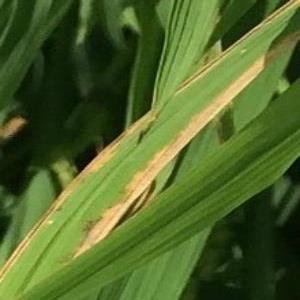
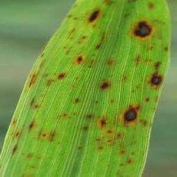
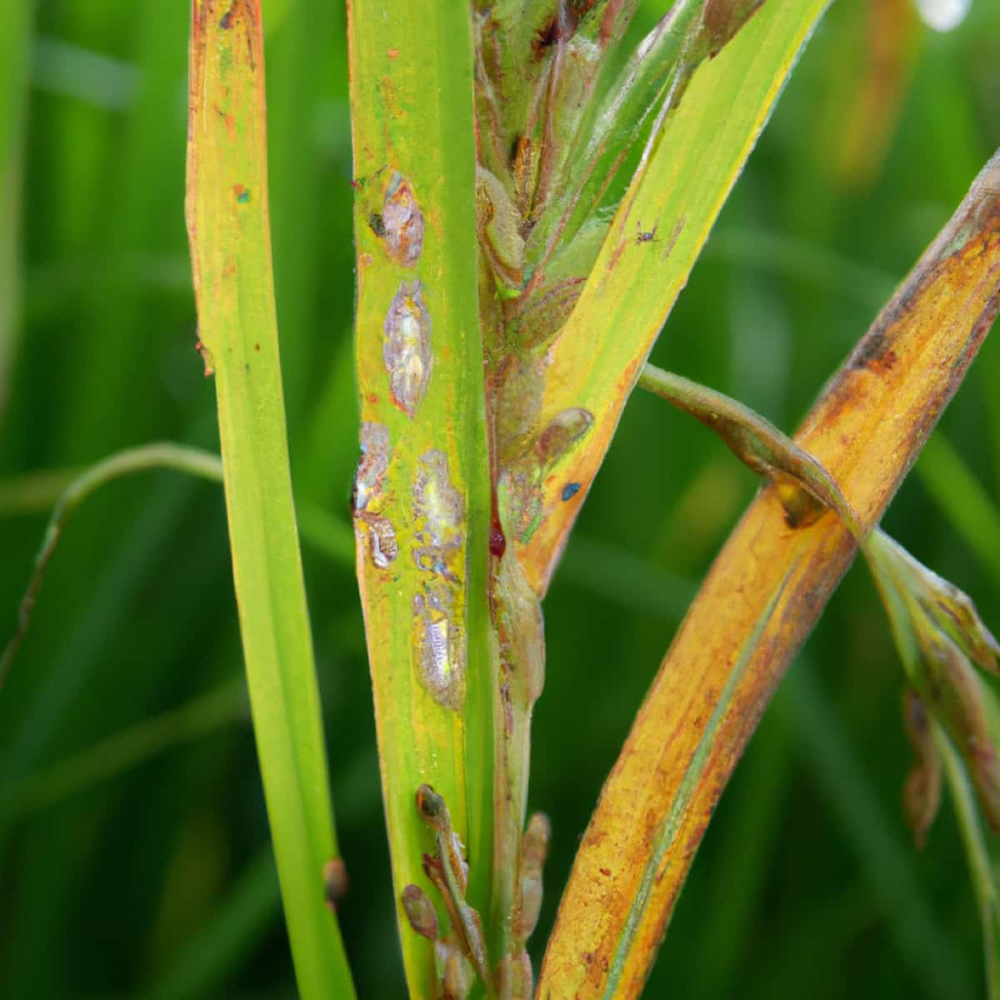
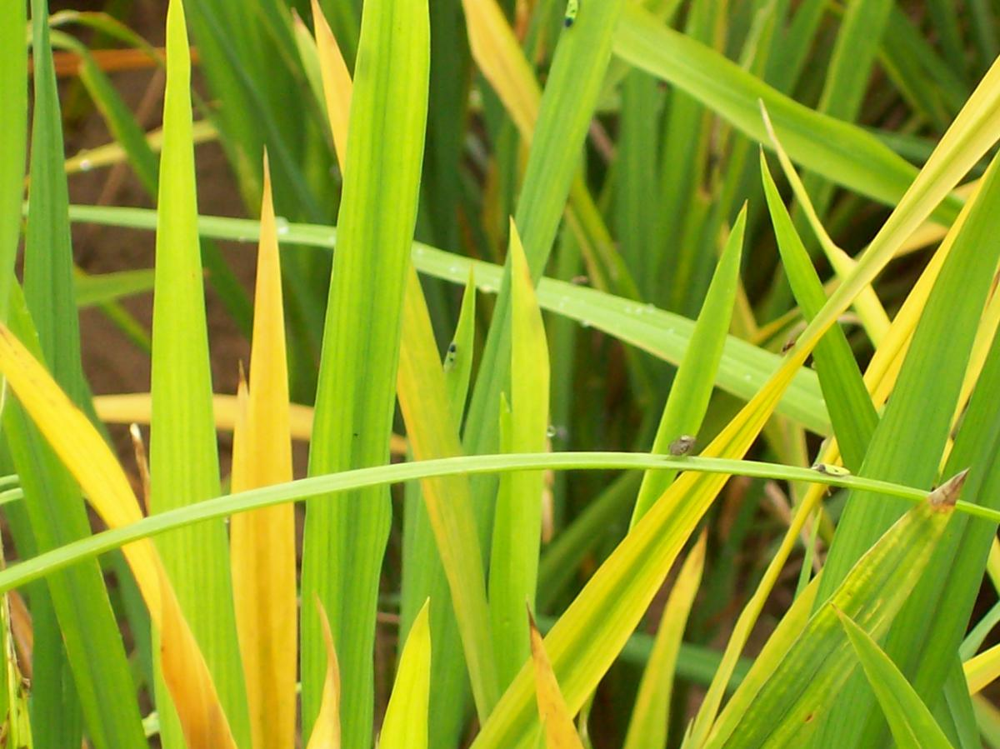
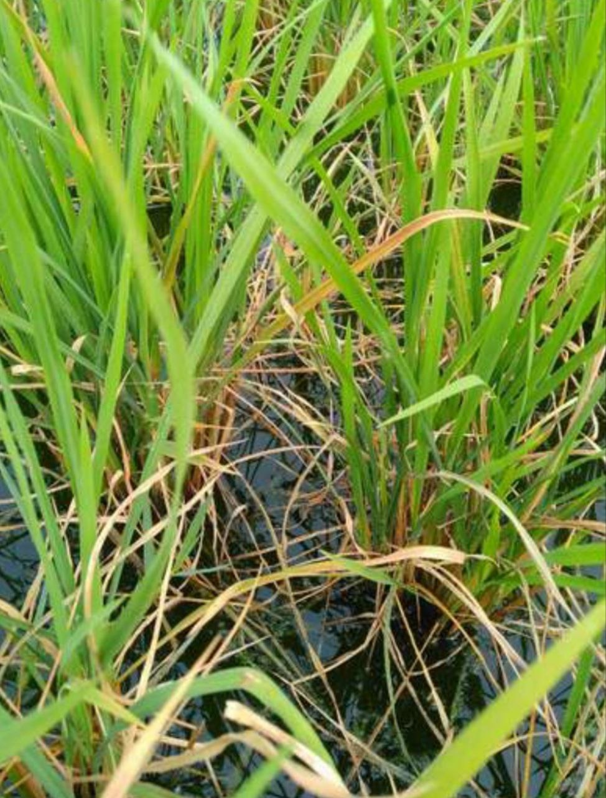
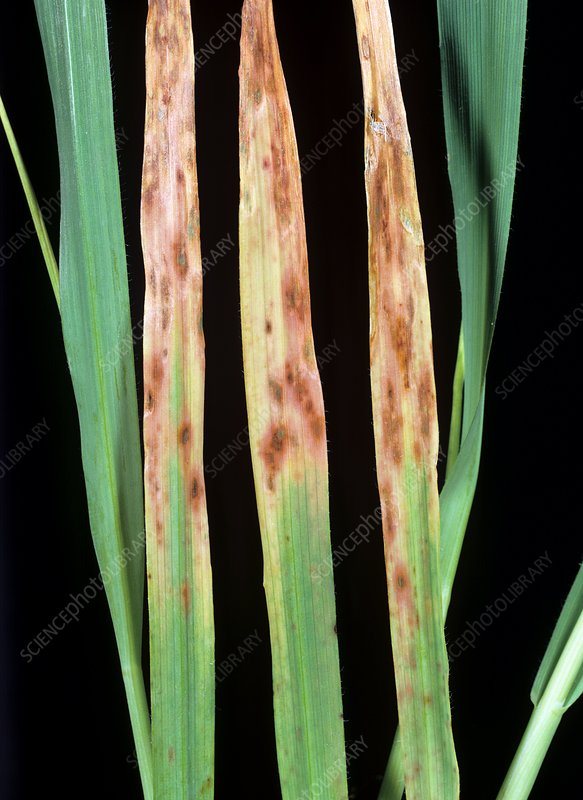
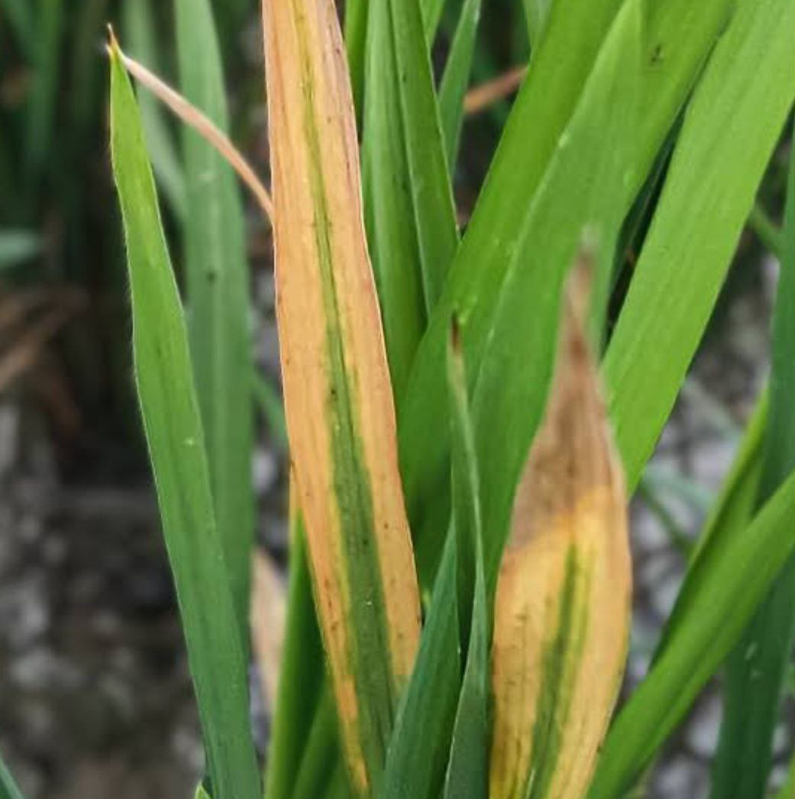

AI-powered identification of Paddy leaf diseases and nutrient deficiencies to support healthy crop growth and improved yield.
Early identification of Paddy leaf diseases helps farmers take preventive measures.

A bacterial disease causing yellowing and drying of rice leaves.

A fungal disease causing brown circular spots on leaves.

A fungal infection forming diamond-shaped lesions on leaves.

A viral disease spread by green leafhoppers.
Nutrient deficiencies affect plant growth and productivity.

Causes pale yellow leaves and poor plant growth.

Leads to dark green leaves and delayed maturity.

Causes yellowing and burning at leaf edges.